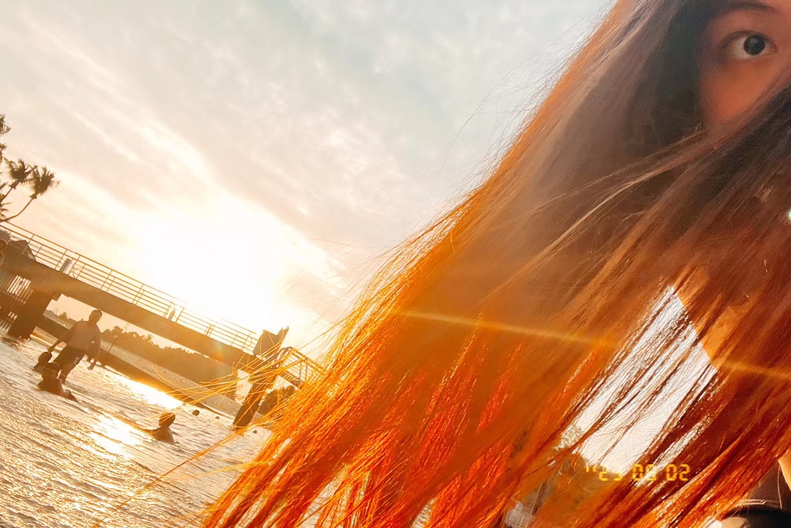

/ PHOTOGRAPHY ARCHIVE
A STUDY
IN COLOR.
Places, people, and passing light—collected as an open-ended visual spectrum rather than a fixed portfolio.
COLOR-ORDERED · ALWAYS GROWING · 01—∞THE
COLLECTION.
Each photograph contributes its own dominant color to the spectrum. New work can be added continuously while the archive reorganizes itself by hue.
DOMINANT COLORSORTED 01—08+
01

02YOUR PHOTOGRAPH
03YOUR PHOTOGRAPH
04YOUR PHOTOGRAPH
05YOUR PHOTOGRAPH
06YOUR PHOTOGRAPH
07YOUR PHOTOGRAPH
08+THE ARCHIVE CONTINUES
COLOR-ORDERED EXHIBITION
The archive is designed for continuous expansion. Add a photograph, record its dominant color, and it will join the visual spectrum without changing the image itself.